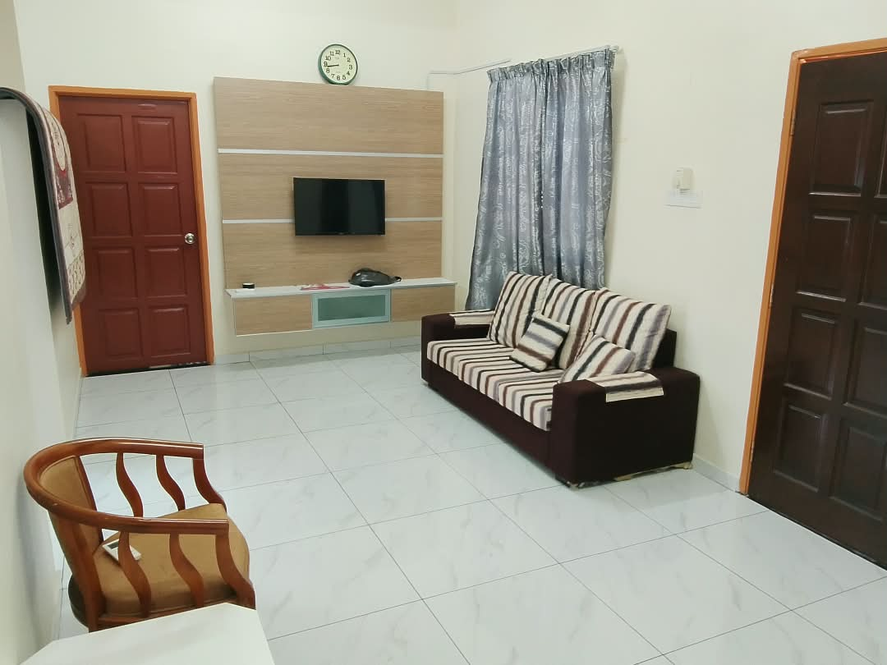
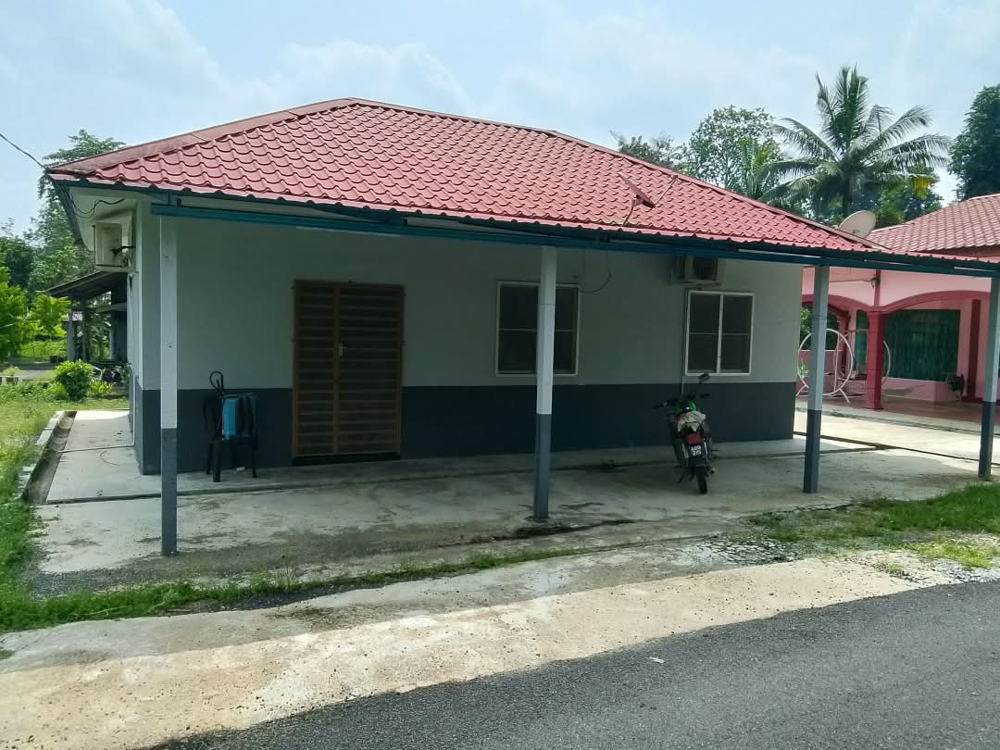
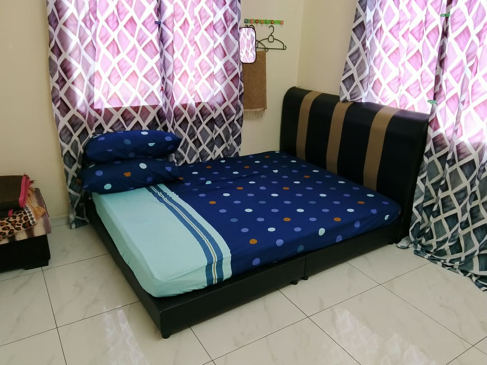
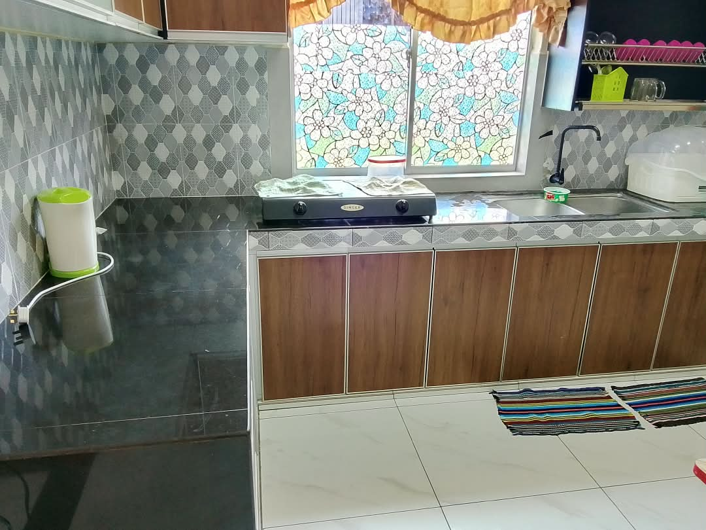
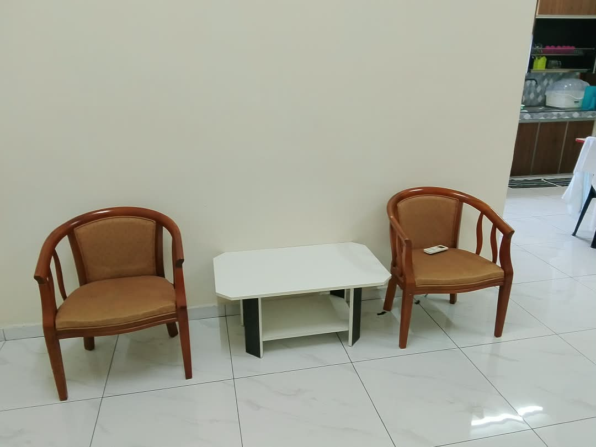
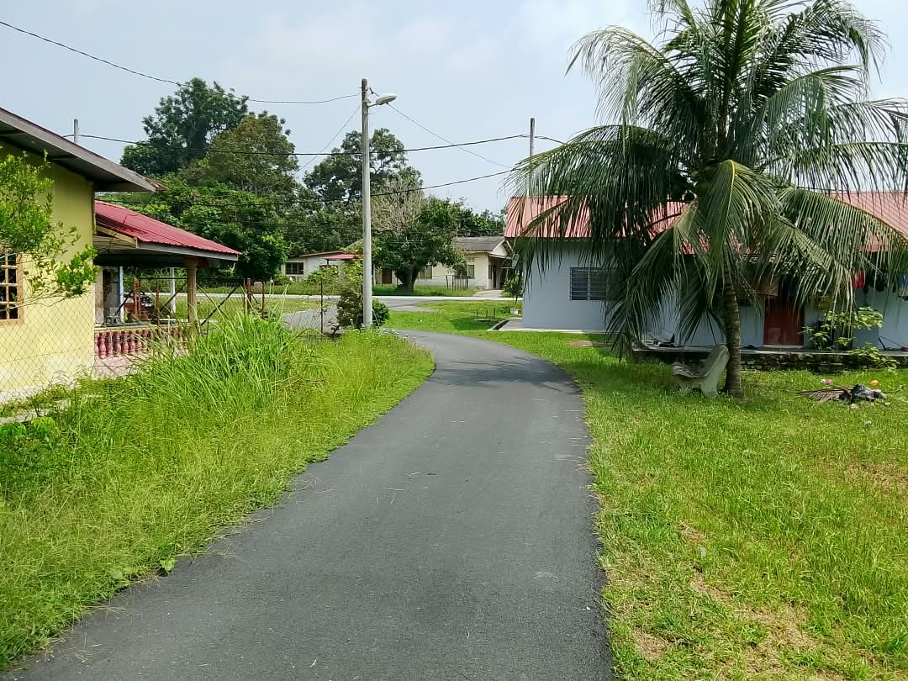
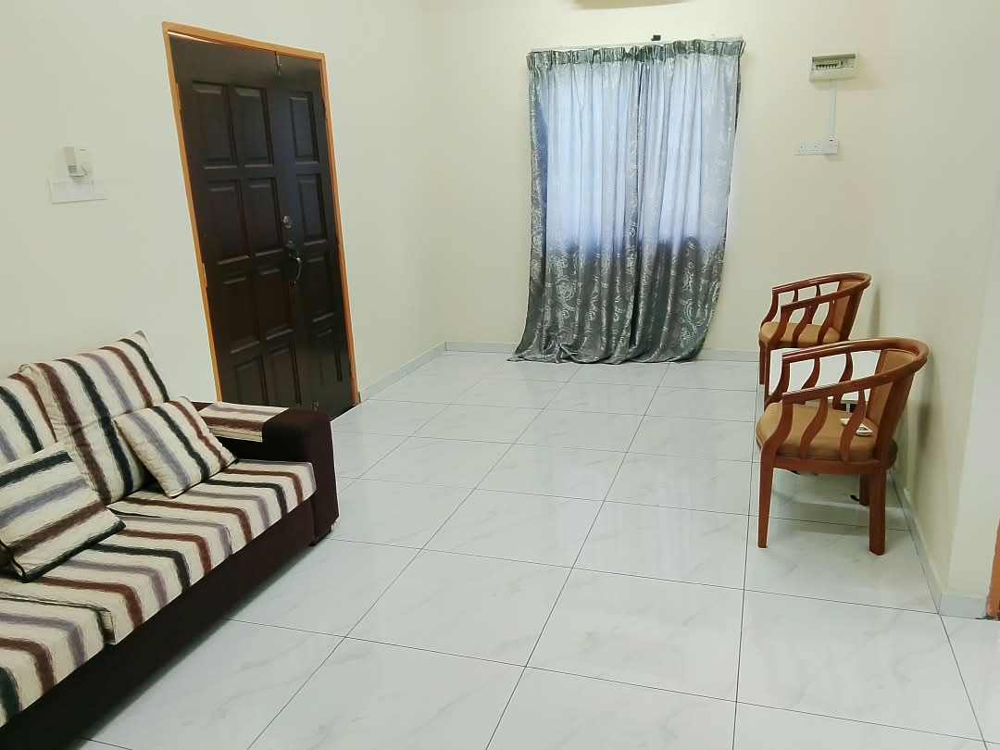

Tempat cerita bersambung.
Ruang tamu rumah.
✳ PULANG KE RASA YANG DIRINDUI
Jauh sekejap daripada kesibukan. Dekat semula dengan yang tersayang. Selamat datang ke Serambi Bonda, sebuah rumah keluarga di Gerik, Perak.
Bukan sekadar tempat singgah.
Tempat untuk merasa di rumah.

RUMAH BONDA · GERIK, PERAKLIHAT · RASA · BAYANGKAN
Tekan main dan ikuti suasana Serambi Bonda dari dekat. Sebuah rumah yang sederhana, tenang dan menunggu untuk diisi dengan cerita keluarga anda.
Video jelajah Serambi Bonda
Gerik, Perak · 1 minit 14 saat
01 — CERITA DI SEBALIK SERAMBI
Rumah ini bermula dengan kasih seorang ibu. Selepas pemergian arwah mak, keluarga berhasrat untuk meneruskan kehangatannya dengan membuka pintu ini kepada tetamu.
Nama Serambi Bonda membawa ingatan itu — tempat menyambut, bercerita dan meluangkan masa bersama. Semoga setiap yang singgah dapat membawa pulang sedikit rasa tenangnya.
Dengan kasih, keluarga Serambi Bonda02 — RUANG UNTUK SEMUA
Setiap ruang ada ceritanya. Pilih sudut kegemaran dan bayangkan masa yang bakal diluangkan bersama.
Lihat foto sebenar rumah dan ruangnya. Hubungi pemilik untuk kapasiti, harga dan butiran penginapan yang terkini.

Ruang tamu rumah.

Antara ruang tidur yang dirakam.

Ruang dapur rumah.
GALERI SERAMBI BONDA
Semua 14 foto yang dikongsi oleh keluarga. Tekan foto untuk melihatnya lebih besar.
PERSEDIAAN SEBELUM SINGGAH
Butiran penuh akan dikemas kini apabila disahkan oleh keluarga.
Dah jumpa sudut kegemaran?
Tanya tentang penginapan ↗03 — PERLAHANKAN LANGKAH
Isi hari dengan perkara sederhana. Secawan kopi, udara pagi dan masa yang tak perlu dikejar.
Idea untuk mengisi waktu bersama. Semak tempat dan aktiviti sekitar dengan pemilik sebelum merancang perjalanan.

01 / PAGI YANG PERLAHAN
Mulakan hari dengan sarapan bersama keluarga. Simpan telefon seketika dan nikmati perbualan yang selalu tertangguh.
Di rumah · Idea santai
02 / KENALI GERIK
Luangkan masa mengenali suasana Gerik. Tanya pemilik tentang tempat makan dan lokasi bersiar-siar yang sesuai untuk keluarga.
Sekitar Gerik · Semak dengan pemilik
03 / MALAM MILIK KITA
Bawa permainan papan kegemaran, makan bersama atau sekadar bercerita. Kadang-kadang, itulah percutian yang paling dirindui.
Bersama keluarga · Idea santaiMasa bersama bermula di sini.
Rancang percutian ↗04 — PINTU KAMI, CERITA ANDA
Pilih tarikh impian anda. Kami sediakan mesej untuk bertanya tentang harga dan kekosongan penginapan.
Cari alamat ini di Google Maps sebelum bertolak. Pin sebenar perlu disahkan oleh pemilik.
Sila tanya pemilik semasa membuat pertanyaan.
Sila tanya pemilik untuk tarikh pilihan anda.
SEBELUM ANDA SINGGAH
Tidak. Borang ini menyediakan mesej pertanyaan sahaja. Pemilik perlu mengesahkan kekosongan, harga dan cara tempahan.
Nyatakan tarikh dan jumlah tetamu melalui borang. Pemilik akan memaklumkan kadar untuk tarikh tersebut.
Senarai kemudahan dan foto sebenar akan dikemas kini selepas disahkan oleh keluarga. Anda boleh bertanya terus kepada pemilik.